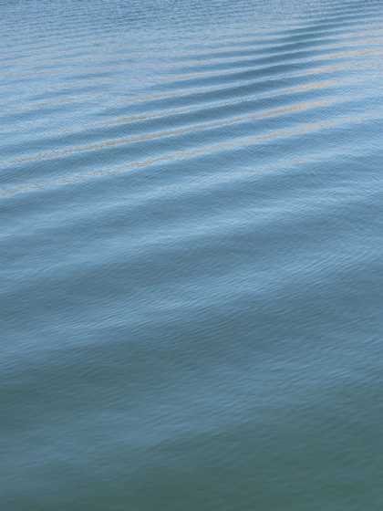
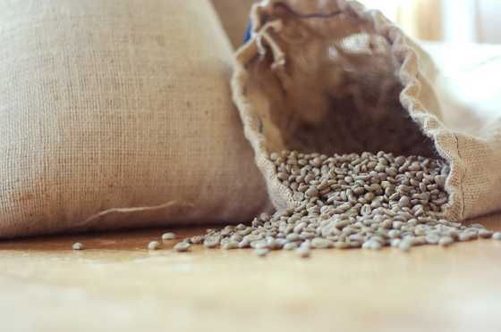
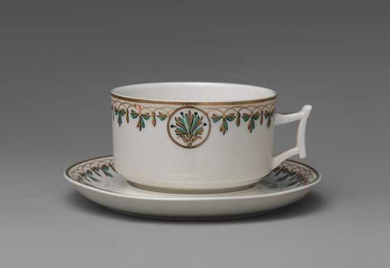
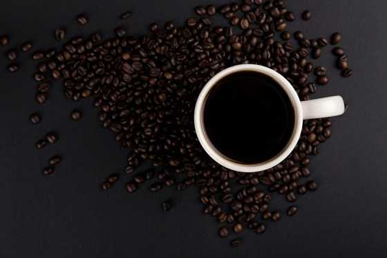

ABOUT
板金会社のコンテナから生まれたカフェ
mii coffeeは、有明海沿岸道路の芦刈インターチェンジ近くにあるコンテナカフェです。建築板金の会社が使われないままになっていたコンテナを活かし、人が気軽に立ち寄れる場所にしたい、という思いから、2023年2月に開店したと報じられています。
- 運営は向井板金(小城市芦刈町)。コンテナ店舗のモデル提案も兼ねています。
- 周辺にカフェが少なく、地域の人が集まる場にもなっています。
- コーヒーはORIGIN COFFEE(佐賀市)のブレンドで、お菓子に合うよう選ばれているとのことです。
- 動物モチーフのマカロンやスコーン、日替わりのケーキなどが紹介されています。
出典: 佐賀経済新聞(2023年4月)、佐賀新聞「口福dish」、佐賀テレビ kachi kachi plus。店名の意味は確認できませんでした。営業日などは報道時点の情報のため、最新はInstagramをご確認ください。

MENU
コーヒーと、小さなお菓子
報道では次のような提供内容が紹介されています。価格・営業時間・最新の内容は準備中です。










VOICE
口コミ(イメージ例)
イメージ例
高速のインター近くでふらっと寄れる場所があるのはありがたいです。ゆっくりコーヒーを飲めました。
イメージ例
小さな動物のマカロンがかわいくて、手土産にもしたくなりました。
イメージ例
コンテナの中なのに居心地がよく、友人との待ち合わせにちょうどよかったです。
※創作のイメージ例であり、実在のお客様の声ではありません。